What it says
With punctuation: “NoFap to power imbalances. Only to consenting, joyful beauty & aesthetics.”
The poster's guess was close. It is a personal rule about what not to look at online. NoFap is the online pledge and community for abstaining from masturbation (“fap” is slang for it). The note narrows that pledge: nothing involving power imbalances, only material that is consenting and joyful, “beauty & aesthetics”. That fits the English note in the same marker, “the gods can see that which you can see”.
All 60 glyphs fit one key: 19 letters plus the &, with nothing left over and no glyph read two ways. The weakest spot is the shadowed end of line 2 (JOYFUL), but its O, Y, U and L are glyphs that already appear in clearer words (see loose ends).
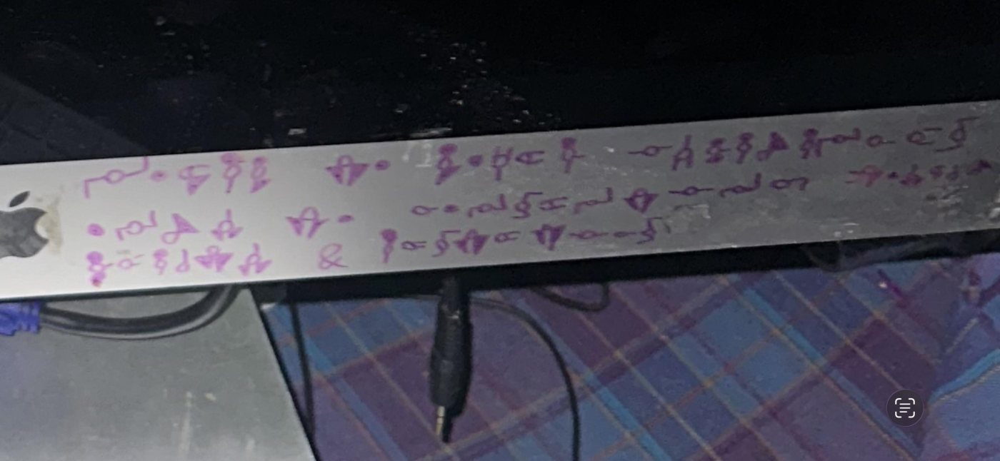
How it was cracked
- Gaps give word lengths. The three lines split into words of 5·2·5·10 / 4·2·10·6 / 6·&·9 glyphs. The lone & is an ordinary ampersand, so the text is probably English.
- A repeated short word. The 2-glyph word arch-over-triangle + dot appears in the same place on lines 1 and 2. Guess TO (dot = O).
- A crib that checks itself. The 10-glyph word in line 2 has the repeat pattern
a b c d e c f g c h(the Z-stroke ring at 3rd, 6th and 9th place). Of the seven words in a 60,000-word English list with that pattern, only CONSENTING has O 2nd and T 7th. Those two letters were already fixed by TO. - The rest falls out. With C O N S E T I G known, line 1's 10-glyph word reads I?BAL?NCES = IMBALANCES, and line 3 reads B E A U T Y = BEAUTY and A E S T E T I C S. Line 2 starts O N L Y = ONLY, and its last word O Y ? U L can only be JOYFUL.
- Line 1. Now only four glyphs are unknown: N O ? A ? / ? O ? E ? before IMBALANCES. The crossed loop at the start is the same glyph as the 4th letter of JOYFUL, so it is F. That gives NOFAP and POWER, and “power imbalances” is a common phrase.
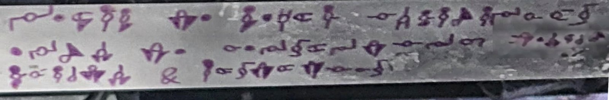
Line by line
Every glyph is cut from the photo, with its letter under it. Hover over a glyph for its position (Lline.glyph). Amber letters are in the shadowed end of line 2.
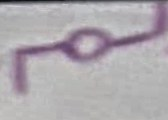
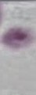
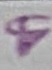
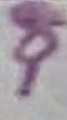
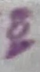
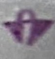
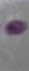
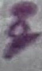
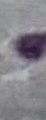
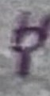
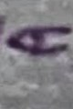
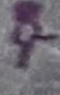
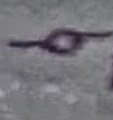
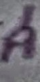
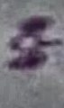
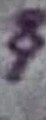
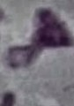
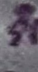
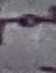
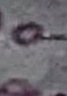
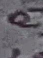
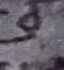
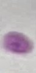
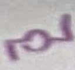
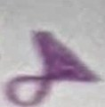
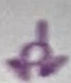
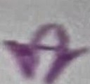
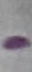
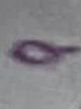
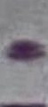
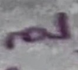
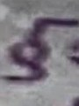
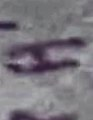
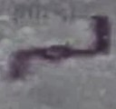
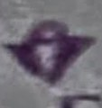
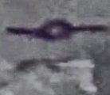
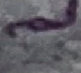
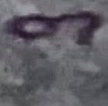
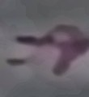
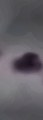
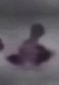
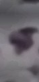
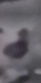
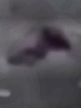
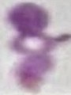
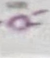
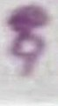
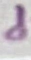
The alphabet
Every occurrence of each letter, cut from the photo. Some glyphs look like dressed-up Latin letters (B like an 8, S like §, F a crossed loop like a cursive f, L a looped ℓ, W like ψ, O a plain dot); others look made up. I checked Theban, Agrippa's Celestial, Malachim, Daedric, Atlantean, Kryptonian and Unown, and none of them matches, so this looks like the writer's own alphabet.
| Letter | Every occurrence | Shape | Words it appears in | Count |
|---|---|---|---|---|
| A | Filled head over a small loop on a stem (like ♀). Also drawn with two little legs (L1.18) and with the loop squeezed shut (L3.8). | NOFAP, IMBALANCES, BEAUTY, AESTETICS | 5 | |
| B | An 8 with filled blobs at top and bottom and a tick to the right. | IMBALANCES, BEAUTY | 2 | |
| C | Small ring with a tail to the right (o–). | IMBALANCES, CONSENTING, AESTETICS | 3 | |
| E | Ring with two strokes to the right (o=). In L1.21 the upper stroke floats free. | POWER, IMBALANCES, CONSENTING, BEAUTY, AESTETICS | 6 | |
| F | Loop crossed by a bar, over a filled down-pointing triangle; the crossed loop is like a cursive f. The second F (L2.20) is in shadow. | NOFAP, JOYFUL | 2 | |
| G | Ring whose tail runs right and then turns down. | CONSENTING | 1 | |
| I | Ring threaded on a horizontal bar (–o–). | IMBALANCES, CONSENTING, AESTETICS | 3 | |
| J | Two short bars, then a hook like a 9. Only once, in the shadowed end of line 2. | JOYFUL | 1 | |
| L | Loop at lower left rising into a filled triangle: a looped ℓ with a flag. | IMBALANCES, ONLY, JOYFUL | 3 | |
| M | An A shape with a loop where the crossbar would be. | IMBALANCES | 1 | |
| N | Ring on a Z-shaped stroke: the left end hooks down, the right end hooks up. In L1.19 the left hook is replaced by the stroke joining it to the A before it. | NOFAP, IMBALANCES, ONLY, CONSENTING | 6 | |
| O | A filled dot. | NOFAP, TO, POWER, ONLY, CONSENTING, JOYFUL | 7 | |
| P | Filled head, loop, and a filled triangle hanging down to the left. | NOFAP, POWER | 2 | |
| R | The A shape (head, loop, stem) with a tick to the right. | POWER | 1 | |
| S | A §-like squiggle with a bar across the top. | IMBALANCES, CONSENTING, AESTETICS | 4 | |
| T | Filled down-pointing triangle with an arch or loop on top. Drawn compact as a kite (L2.13) and spread out like wings (L3.5). | TO, CONSENTING, BEAUTY, AESTETICS | 6 | |
| U | Loop at the bottom with a stem rising on the right (like ꝺ). | JOYFUL, BEAUTY | 2 | |
| W | Loop on a stem with two arms raised (like ψ). | POWER | 1 | |
| Y | Stem on top, then a ring, then two filled wings. | ONLY, JOYFUL, BEAUTY | 3 | |
| & | An ordinary ampersand. | & | 1 |
Not used on the monitor, so unknown: D H K Q V X Z.
How sure is this?
Blind check: I replaced the 19 letter classes with anonymous symbols and kept the word gaps. A simulated-annealing solver, given no cribs, scored each candidate key by how well every group splits into common English words. It found exactly this key in 4 of 10 restarts, and no other key scored as high. The same solver run on shuffled glyphs (same symbols and word lengths, order randomised) never scored better than −215, against −135 here.
Caveat: the blind check uses my final grouping of glyph shapes into letters. A few of those groupings were settled with the decoding in hand: the joined N at L1.19, the legged A at L1.18 and squeezed A at L3.8, the kite and winged T at L2.13 and L3.5, and the shadowed F at L2.20. The decisive steps don't depend on them. TO, CONSENTING, IMBALANCES and BEAUTY come from glyphs that are clearly the same shape.
Loose ends
- AESTETICS. The last word has nine glyphs, A‑E‑S‑T‑E‑T‑I‑C‑S. Both T's are the same arch-over-triangle glyph used in TO and CONSENTING, and there is no extra glyph between them. So the H is missing on the monitor itself, not lost in the decoding (compare the US spelling esthetics).
- Shadowed end of line 2. The last six glyphs, JOYFUL, sit where the bezel is in shadow and the photo is soft. O (dot), Y (stem-ring-wings), U (loop with rising stem) and L (loop and flag) match their clearer copies elsewhere. The 4th glyph is a blurred loop-with-bar of the same outline as the F at L1.3, and the first is a hook with two bars on its left; J is its only occurrence. “?OY?UL” has no other English fit, so the word itself is secure even though the J and F glyphs are not well seen.
- Variant forms. A is drawn three ways and T three ways (see the alphabet table). N loses its left hook where it is joined to the A before it in IMBALANCES. In line 1 one E's upper stroke floats free of the ring. None of these changes the reading of any word.
- Not ink. A whitish smudge sits in the gap after the first TO in line 1, and a faint grey dash sits above the E at the start of line 3. Neither is purple marker, and neither is needed for any word.
Write in it
Type text to render it with glyphs cut from the photo. Letters the monitor never uses (D H K Q V X Z) show as dashed boxes.